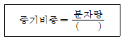
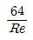
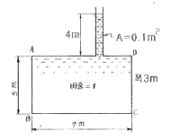

소방설비산업기사(기계) (2007-09-02 기출문제)
1과목: 소방원론
1. 다음 중 연소의 3요소를 옳게 나열한 것은?
- 가연물, 산소, 점화원
- 가연물, 산소, 연쇄반응
- 고체가연물, 기체가연물, 액체가연물
- 전도, 대류, 복사
(정답률: 100%)

2. 다음 물질 중 연소 범위가 가장 넓은 것은?
- 아세틸렌
- 메탄
- 프로판
- 에탄
(정답률: 80%)
3. 다음 중 바닥부분의 내화구조 기준으로 틀린 것은?
- 철근 콘크리트조로서 두께가 5cm 이상인 것
- 철골철근 콘크리트조로서 두께가 10cm 이상인 것
- 철재로 보강된 콘크리트 블록조ㆍ벽돌조 또는 석조로서 철재에 덮은 콘크리트블록 등의 두께가 5cm 이상인 것
- 철재의 양면을 두께 5cm 이상의 철망모르타르 또는 콘크리트로 덮은 것
(정답률: 58%)
4. 소화(消火)를 하기 위한 방법으로 틀린 것은?
- 산소의 농도를 낮추어 준다.
- .가연성 물질을 냉각시킨다.
- 가열원을 계속 공급한다.
- 연쇄반응을 억제한다.
(정답률: 96%)
5. 증기비중을 구하는 식은 다음과 같다. 분모의 ( )속에 가장 알맞은 값은?

- 15
- 21
- 22.4
- 29
(정답률: 84%)
6. 제4류 위험물의 제조소에서 게시판에 주의사항을 표시하려고 할 때 가장 적당한 것은?
- 물기주의
- 화기주의
- 화기엄금
- 충격주의
(정답률: 78%)
7. 건축물의 내부에 설치하는 피난계단의 구조는 내화구조로 하고, 어디까지 직접 연결되도록 하는가?
- 피난층 또는 옥상
- 피난층 또는 지상
- 개구부 또는 옥상
- 개구부 또는 지하
(정답률: 95%)
8. 다음 중 인화점이 가장 낮은 물질은?
- 등유
- 아세톤
- 경유
- 아세트산
(정답률: 69%)
9. 다음 물질 중 금수성 물질에 해당하는 것은?
- 유황
- 탄화칼슘
- 황린
- 이황화탄소
(정답률: 65%)
10. 내화구조 기준에서 외벽 중 비내력벽의 경우에는 철근 콘크리트조의 두게가 몇 cm 이상인 것인가?
- 5
- 6
- 7
- 8
(정답률: 38%)
11. 물의 증발잠열은 몇 kcal/kg 인가?
- 439
- 539
- 639
- 739
(정답률: 95%)
12. 다음 화재종류 중 A급 화재에 속하지 않는 것은?
- 목재 화재
- 섬유류 화재
- 종이류 화재
- 전기 화재
(정답률: 89%)
13. 다음 중 제4류 위험물의 특수인화물에 해당되는 것은?
- 휘발유
- 금속칼륨
- 디에킬에테르
- 과산화수소
(정답률: 64%)
14. 물의 증발잠열을 이용한 주요 소화작용에 해당하는 것은?
- 희석작용
- 염 억제작용
- 냉각작용
- 질식작용
(정답률: 65%)
15. 다음 물질의 연소 중 자기연소에 해당하는 것은?
- 목탄
- 종이
- 유황
- TNT
(정답률: 67%)
16. 점화원이 없이 가연물에 가열된 열에 의하여 스스로 연소가 시작되는 최저온도를 무엇이라 하는가?
- 발화점
- 인화점
- 임계정
- 승화점
(정답률: 81%)
17. 자연발화를 방지하는 일반적인 방법으로 옳지 않은 것은?
- 통풍을 잘 시킨다.
- 저장실의 온도를 낮춘다.
- 촉매와의 접촉을 피한다.
- 습기를 많이 제공한다.
(정답률: 88%)
18. 코크스 또는 금속분의 연소를 무슨 연소라고 하는가?
- 분해연소
- 증발연소
- 자기연소
- 표면연소
(정답률: 62%)
19. 산소의 공급이 원활하지 못한 화재실에 급격히 산소가 공급이 될 경우 순간적으로 연소하여 화재가 폭풍을 동반하여 실외로 분출하는 현상은?
- 후래쉬 오버
- 보일 오버
- 백 드래프트
- 슬롭 오버
(정답률: 79%)
20. 다음 피난대책의 조건 중 틀린 것은?
- 피난로는 간단명료할 것
- 피난설비는 반드시 이동식 설비일 것
- 막다른 복도가 없도록 계획할 것
- 피난설비는 Fool-Proof와 Fail Safe의 원칙을 중시 할 것
(정답률: 77%)
2과목: 소방유체역학
21. 분말 소화 액제 중 A, B, C급 화재에 모두 유효한 소화약제의 주성분은?
- 탄산수소나트륨
- 탄산수소칼륨
- 제1인산 암모늄
- 요소
(정답률: 74%)
22. 수평면과 45° 경사를 갖는 지름 30mm 인 원관으로부터 상방향으로 유출하는 물 제트의 유출속도가 9.8m/s 일 때 물 제트의 최고 상승 높이는 몇 m 인가?
- 4.45
- 3.45
- 2.45
- 1.45
(정답률: 24%)
23. 할론 1301 소화가, CO2 소화기의 소화약제는 소화기 내부에 어떤 상태로 보존되고 있는가?
- 할론 1301 - 기체, CO2 - 액체
- 할론 1301 - 액체, CO2 - 기체
- 할론 1301 - 기체, CO2 - 기체
- 할론 1301 - 액체, CO2 - 액체
(정답률: 50%)
24. 지름 300mm인 원형관 속을 6kg/s의 질랸유량으로 공기가 흐르고 있다. 관속 공기의 압력이 250 kPa, 온도가 20℃일 때 관속을 흐르는 공기의 평균속도는 몇 m/s 인가? (단, 공기의 기체상수는 0.287 kJ/kgㆍK이다.)
- 22.6
- 24.6
- 26.6
- 28.6
(정답률: 16%)
25. 동점성계수외 차원을 기본차원인 질량(M), 길이(L), 시간(T)으로 표시하면?
- ML-1T-1
- ML-2T-1
- MLT-2
- L2T-1
(정답률: 34%)
26. 할론 2402의 분자식은 어느 것인가?
- CBrF3
- CBrCLF2
- C2Br3F3
- C2Br2F4
(정답률: 90%)
27. 직접적인 유량 측정장치로 볼 수 없는 것은?
- 로타미터(rotameter)
- 벤튜리미터(Venturi meter)
- 오리피스(Orifice)
- 부르돈관(Bourdon tube)
(정답률: 32%)
28. 펌프에서 공동 현상이 발생할 때 나타나는 현상이 아닌 것은?
- 소음과 진동 발생
- 양정곡선 저하
- 효율곡선 증가
- 펌프 깃의 침식
(정답률: 89%)
29. 레이놀즈수의 물리적 의미로 가장 적합한 것은?
- 관성력/표면장력
- 관성력/중력
- 압력/동압
- 관성력/점성력
(정답률: 48%)
30. 압력이 100kPa이고 온도가 27℃ 일 때 5m×10m×5m인 실내에 있는 공기의 질량은 몇 kg인가? (단, 공기는 이상기체라 가정하고, 기체상수는 287J/kgㆍK이다.)
- 29
- 270
- 290
- 3230
(정답률: 31%)
31. 다음 중 열역학 제1법칙은?
- 절대온도 0도에서 엔트로피가 0이다.
- 일, 열 및 내부에너지 사이의 관계식이다.
- 사이클과정에서 열이 모두 일로 변화할 수 없다.
- 열평형상태에 있는 두 물체의 온도는 같다.
(정답률: 43%)
32. 소화배관의 길이가 1500m, 배관의 구경(내경) 200mm인 관을 통하여 2m/s의 평균속도로 소화수가 흐르고 있다면 손실수두는 몇 m가 되겠는가? (단, 마찰계수는 0.03 이다.)
- 43.9
- 45.9
- 48.9
- 50.9
(정답률: 44%)
33. 원관 내 흐름에 대한 설명 중 틀린 것은?
- 층류 흐름에서의 관마찰계수는

이다. - 점성 유체가 층류로 흐를 때 평균속도는 최대 속도의 1/4배이다.
- 수력구배선은 임의의 위치에서의 압력수두와 위치수두의 합을 나타낸다.
- 에너지선은 임의의 위치에서의 속도수두, 압력수두, 위치수두의 합을 나타낸다.
(정답률: 32%)
34. 공기가 게이지 압력 2.06×105Pa의 상태로 지름이 0.15m인 관속을 흐르고 있다. 이 때 대기압은 1.03×105Pa이고 공기 유속이 4m/s라면 질량유량(mass flow rate)은 약 몇 kg/s 인가? (단, 공기의 온도는 37℃이고, 기체상수는 287J/kgㆍK이다.)
- 0.245
- 2.45
- 0.026
- 25
(정답률: 35%)
35. 할로겐 화합물 소화약제가 아닌 것은?
- C2F4Br2
- C6H6
- CF3Br
- CF2ClBr
(정답률: 64%)
36. 다음 그림과 같은 탱크에 물이 들어 있다. A-B면(5m×3m)에 작용하는 힘은?

- 0.95 kN
- 10 kN
- 95 kN
- 955 kN
(정답률: 34%)
37. 피토관의 두 구멍 사이에 차압계를 연결하였다. 이 피토관을 풍동실험에 사용했는데 △P가 700Pa이었다. 풍동에서의 공기 속도는 몇 m/s인가? (단, 풍동에서의 압력과 온도는 각각 98 kPa과 20℃이고 공기의 기체상수는 287 J/kgㆍK이다.)
- 32.53
- 34.67
- 36.85
- 38.94
(정답률: 57%)
38. 이상기체에 대한 다음의 설명 중 틀린 것은?
- 엔탈피는 온도만의 함수이다.
- 정압비열은 온도와 압력의 함수로 볼 수 있다.
- 내부 에너지는 온도만의 함수이다.
- 엔트로피는 온도와 압력의 함수로 볼 수 있다.
(정답률: 25%)
39. 무차원 유동함수(stream function) ψ가 직각좌표계(x, y)상에서 ψ=y-x2로 표현되는 정상 상태의 2차원 유동장이 있다. 유동장 내의 한 점(x=1, y=5)에서 유속의 크기는? (단, 여기서 모든 양은 무차원으로 되어 있다.)
- √5
- √13
- 4
- √26
(정답률: 10%)
40. 면적이 12m2, 두께가 10mm인 유리의 열전도율이 0.8W/m℃이다. 어느 차가운 날 유리의 바깥쪽 표면온도는 -1℃ 이며 안쪽 표면온도는 3℃이다. 이 경우 유리를 통한 열전달량은 몇 W 인가?
- 3780
- 3800
- 3820
- 3840
(정답률: 25%)
3과목: 소방관계법규
41. 제4류 위험물로서 제1석유류인 수용성 액체의 지정수량은 몇 리터인가?
- 100
- 200
- 300
- 400
(정답률: 57%)
42. 다음 중 소방신호의 종류별 소방신호의 방법에 해당하지 않는 것은?
- 타종신호
- 싸이렌신호
- 게시판
- 스트로보신호
(정답률: 47%)
43. 소방기본법상 화재, 재난ㆍ재해 그 밖의 위급한 상황에서 발생한 응급환자를 응급처치 하거나 의료기관에 이송하기 위한 구급대의 운영, 편성권자가 아닌 것은?
- 소방본부장
- 소방서장
- 소방방재청장
- 보건복지부장관
(정답률: 82%)
44. 다음 중 소방활동 등에 관한 사항으로 옳지 않은 것은?
- 화재현장을 발견한 사람은 그 현장의 상황을 소방서ㆍ소방본부 또는 관계행정기관에 지체 없이 알려야 한다.
- 소방대는 화재현장에 신속하게 충동하기 위하여 긴급한 때에는 일반적인 통행에 쓰이지 아니하는 도로ㆍ빈터 또는 물위로 통행할 수 있다.
- 모든 차와 사람은 소방자동차가 화재진압 및 구조ㆍ구급 활동을 위하여 출동을 하는 때에는 이를 방해하여서는 아니 된다.
- 화재가 발생한 때에는 그 소방대상물의 관계인은 급히 대피하여 화재의 연소상태를 살펴야 한다.
(정답률: 75%)
45. 일반공사감리 대상의 경우 감리현장 연면적의 종합계가 10만m2 이하일 때 1인의 책임감리원이 담당하는 소방공사 감리현장은 몇 개 이하인가?
- 2개
- 3개
- 4개
- 5개
(정답률: 39%)
46. 소방용수시설로 급수탑을 설치하고자 할 때 개폐밸브의 설치 높이는?
- 지상에서 1.0m 이상 1.5m 이하
- 지상에서 1.5m 이상 1.7m 이하
- 지상에서 1.5m 이상 2.0m 이하
- 지상에서 1.0m 이상 2.5m 이하
(정답률: 68%)
47. 다음 중 시ㆍ도지사가 방염업자의 등록을 취소하거나 6월 이내의 기간을 정하여 이의 시정이나 영업정지를 명할 수 있는 것이 아닌 것은?
- 거짓 그 밖의 부정한 방법으로 등록을 한 때
- 정당한 사유 없이 계속하여 6개원간 휴업한 때
- 다른 자에게 등록증 또는 등록수첩을 빌려준 때
- 등록을 한 후 정당한 사유 없이 1년이 지나도록 영입을 개시하지 아니한 때
(정답률: 16%)
48. 관계인이 예방규정을 정하여야 하는 제조소 등의 기준으로 올바른 것은?
- 지정수량의 20배 이상의 위험물을 취급하는 제조소
- 지정수량의 150배 이상의 위험물을 저장하는 옥내 저장소
- 지정수량의 250배 이상의 위험물을 저장하는 옥외저장소
- 지정수량의 350배 이상의 위험물을 저장하는 옥외탱크저장소
(정답률: 39%)
49. 소방시설 설치유지 및 안전관리에 관한 법률상 특정소방대상물의 관계인이 피난시설 및 방화시설을 폐쇄한 경우 이의 필요한 조치를 명할 수 있는 자는?
- 행정자치부장관
- 건설교통부장관
- 관할 시ㆍ군ㆍ구청장
- 소방본부장 또는 소방서장
(정답률: 90%)
50. 소방대상물의 관계인에 대한 설명으로 적절하지 아니한 것은?
- 소방대상물의 소유자
- 소방대상물의 점유자
- 소방대상물을 검사중인 소방공무원
- 소방대상물의 관리자
(정답률: 59%)
51. 소방본부장 또는 소방서장은 소방업무를 보조하게 하기 위하여 의용소방대를 둔다. 다음 중 해당하지 않는 지역은?
- 광역시
- 읍
- 군
- 면
(정답률: 17%)
52. 특정소방대상물로서 숙박시설에 해당되지 않는 것은?
- 호텔
- 모텔
- 휴양콘도미니엄
- 오피스텔
(정답률: 79%)
53. 다음 중 국고보조 대상 소방활동장비의 종류로 거리가 먼 것은?
- 무정전전원장치
- 소방자동차
- 소방헬리콥터
- 소방정
(정답률: 79%)
54. 소방시설관리업의 등록기준에 미달하게 된 때 1차 행정 처분기준은?
- 경고(시정명령)
- 영업정지 3월
- 영업정지 6월
- 등록취소
(정답률: 65%)
55. 위험물을 취급하는 제조소에서 피뢰침의 설치는 지정수량의 몇 배 이상의 위험물을 취급하는 경우인가?
- 10배
- 20배
- 25배
- 30배
(정답률: 74%)
56. 소방검사를 관계인의 승낙 없이 해가 뜨기 전이나 해가 진 뒤에도 할 수 있는 경우로 가장 알맞은 것은?
- 소방방재청장이 해당 소방대상물에 소방검사를 지시할 경우
- 화재가 발생할 우려가 뚜렷하여 긴급하게 검사할 필요가 있는 경우
- 소방대상물이 비공개 된 경우
- 소방대상물에서 직원 등이 근무하고 있지 않는 시간에 검사하는 경우
(정답률: 86%)
57. 화재경계지구의 지정대상지역으로 옳지 않은 것은?
- 시장지역
- 공장ㆍ창고가 밀집한 지역
- 소방출동로가 좁은 지역
- 목조건물이 밀집한 지역
(정답률: 80%)
58. 방화관리대상물의 관계인의 방화관리자를 선임한 때에는 선임한 날부터 며칠 이내에 관한 소방본부장 또는 소방서장에게 신고하여야 하는가?
- 7일
- 14일
- 21일
- 30일
(정답률: 67%)
59. 소방기본법의 목적과 가장 거리가 먼 것은?
- 국민의 생명ㆍ신체 및 재산 보호
- 소방기술 진흥
- 화재를 예방ㆍ경계 또는 진압
- 공공의 안녕질서 유지와 복리증진
(정답률: 88%)
60. 다음 소방시설 붕 피난설비에 속하는 것으로 알맞은 것은?
- 제연설비ㆍ휴대용비상조명등
- 자동화재속보설비ㆍ유도등
- 비상방송설비ㆍ비상벨설비
- 비상조명등ㆍ유도등
(정답률: 34%)
4과목: 소방기계시설의 구조 및 원리
61. 스프링클러설비의 화재안전기준상 스프링클러 설비의 배관중 교차배관에서 분기되는 지점을 기점으로 한쪽 가지배관에 설치되는 헤드의 개수는?
- 5개 이하
- 8개 이하
- 10개 이하
- 12개 이하
(정답률: 60%)
62. 지하층을 제외한 11층 이상의 소방대상물로서 폐쇄형 스프링클러 헤드의 설치개수가 30개일 때 수원의 수량 중 맞는 것은?
- 16m3
- 32m3
- 48m3
- 64m3
(정답률: 57%)
63. 연결송수관설비의 방수기구함은 방수구가 가장 많이 설치된 층을 기준하여 몇개 층마다 설치하여야 하는가?
- 각 층
- 2개 층
- 3개 층
- 10개 층
(정답률: 39%)
64. 완강기에 사용하는 롶의 구조 및 성능으로 적합하지 않은 것은?
- 와이어로우프에 외장을 하는 경우에는 전체 길이에 걸쳐 균일하게 외장을 하여야 한다.
- 강하시 사용자를 심하게 선회시키는 일이 없어야 한다.
- 양끝은 이탈되지 아니하도록 벨트의 연결장치에 연결되어야 한다.
- 와이어로우프의 지름은 가는 것 일수록 좋다.
(정답률: 80%)
65. 축압식 저장용기의 압력은 온도 20℃에서 할론 1301을 저장할 경우 몇 MPa이 되도록 질소가스로 축압하는가?
- 1.5 MPa 또는 2.2 MPa
- 2.5 MPa 또는 4.2 MPa
- 3.5 MPa 또는 5.2 MPa
- 4.5 MPa 또는 6.2 MPa
(정답률: 81%)
66. 연결살수설비의 화재안전기준상 개방형헤드를 사용하는 연결살수설비에 있어서 하나의 송수구역에 설치하는 살수헤드의 수는 몇 대 이하이어야 하는가?
- 10개
- 20개
- 30개
- 40개
(정답률: 72%)
67. 포소화설비의 화재안전기준상 포헤드를 정방형으로 배치한 경우에 포헤드 상호간 거리 산정식은? (단, r은 유효반경이다.)
- S=2r sin 30°
- S=2r cos 30°
- S=2r sin 45°
- S=2r cos 45°
(정답률: 56%)
68. 특별피난계단의 계단실 및 부속실 제연설비의 화재안전기준상 계단실의 높이가 31m 이하로서 계단실만을 제연하는 경우에는 하나의 계단실에 몇 개의 급기구를 설치하여야 하는가?
- 1개
- 2개
- 3개
- 4개
(정답률: 32%)
69. 이산화탄소소화설비의 화재안전기주낭 이산화탄소 소화약제의 고압식 저장용기의 내압시험 압력으로서 맞는 것은?
- 15 MPa 이하
- 15 MPa 이상
- 25 MPa 이하
- 25 MPa 이상
(정답률: 15%)
70. 물분무소화설비 수원의 저수량 기준에 부적합한 것은?
- 콘베이어 벨트 등에 있어서는 벨트부분의 바닥면적 1m2에 대하여 10ℓ/min로 20분간 방수할 수 있는 양 이상으로 할 것
- 특수가연물을 저장 또는 취급하는 소방대상물 또는 그 부분에 있어서 그 바닥면적(50m2를 초과할 경우에는 50m2) 1m2에 대하여 10ℓ/min로 20분간 방수할 수 있는 양 이상으로 할 것
- 차고에 있어서는 그 바닥면적(50m2를 초과할 경우에는 50m2) 1m2에 대하여 20ℓ/min로 20분간 방수할 수 있는 양 이상으로 할 것
- 주차장에 있어서는 그 바닥면적(50m2를 초과할 경우에는 50m2) 1m2에 대하여 10ℓ/min로 20분간 방수할 수 있는 양 이상으로 할 것
(정답률: 30%)
71. 분말소화설비의 화재안전기준 상 분말소화약제의 가압용가스 용기를 3병 이상 설치한 경우에 있어서는 2개 이상의 용기에 부착하여야 하는 밸브는?
- 배기밸브
- 안전밸브
- 전자개방밸브
- 크리닝밸브
(정답률: 46%)
72. 제연설비에 사용하는 배출풍도의 크기(풍도 단면의 긴변 또는 직경의 크기)가 1500mm 초과 2250mm 이하 일 경우 강판의 두께는 몇 mm 이상으로 하여야 하는가?
- 0.5
- 0.6
- 0.8
- 1.0
(정답률: 20%)
73. 옥내 소화전 설비의 가압 송수장치에 대한 내용 중 잘못된 것은?
- 내연기관의 가동은 소화전함의 위치에서 원격 조작이 가능하고, 기동을 명시하는 노란색등을 설치할 것
- 쉽게 접근할 수 있고 점검하기에 충분한 공간이 있는 장소로서 화재 및 침수 등의 재해로 인한 피해를 받을 우려가 없는 곳에 설치할 것
- 동결방지조치를 하거나 동결의 우려가 없는 장소에 설치할 것
- 펌프의 토출량은 옥내소화전이 가장 많이 설치된 층의 설치개수(옥내소화전이 5개 이상 설치된 경우에는 5개)에 130ℓ\/min를 곱한 양 이상이 되도록 할 것
(정답률: 50%)
74. 지하에 설치하는 소화용수 설비의 소요수량이 40m3이상 100m3미만일 경우에 채수구는 몇 개를 설치하여야 하는가?
- 4개
- 3개
- 2개
- 1개
(정답률: 60%)
75. 수동식소화기는 각 층마다 설치하되 소방대상물의 각 부분으로부터 1개의 수동식소화기까지의 거리로 맞는 것은?
- 소형수동식소화기 - 수평거리 20m 이내
- 소형수동식소화기 - 보행거리 30m 이내
- 대형수동식소화기 - 수평거리 20m 이내
- 대형수동식소화기 - 보행거리 30m 이내
(정답률: 55%)
76. 옥내소화전설비에서 옥내소화전 방수구는 바닥으로부터 높이가 몇 m 이하가 되도록 설치해야 하는가?
- 1.5
- 2.0
- 2.5
- 3.0
(정답률: 74%)
77. 공장 건축물을 방호하기 위하여 폐쇄형 스프링클러 헤드를 설치 하였다. 헤드 설치장소의 평상시 최고 주위 온도가 110℃이고, 층고가 3.8m 일 대 이곳에 설치할 수 있는 헤드의 표시온도로 알맞은 것은?
- 79℃ 미만
- 79℃ 이상 121℃ 미만
- 121℃ 이상 162℃ 미만
- 162℃ 이상
(정답률: 50%)
78. 옥내소화전설비의 화재안전기준상 옥내소화전설비의 위치를 표시하는 표시등은?
- 적색등
- 녹색등
- 흰색등
- 청색등
(정답률: 80%)
79. 포소화설비의 화재안전기준상 포소화약제 혼합방식에 해당하지 않은 것은?
- 프레져 푸로포셔너방식
- 라인 프레져 푸로포셔너방식
- 펌프 푸로포셔너방식
- 프레져사이드 푸로포셔너방식
(정답률: 25%)
80. 소화약제에 의한 간이 소화용구가 아닌 것은?
- 마른모래
- 팽창질석
- 수동펌프식
- 팽창진주암
(정답률: 56%)